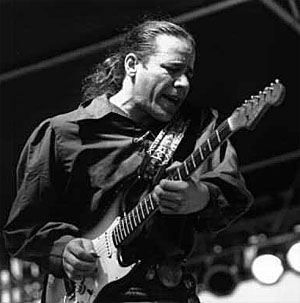
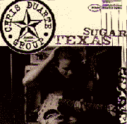

 |
Chris DUARTE
(1963, Сан-Антонио, Техас)
Крис ДЮАРТ - Американский блюзовый певец, гитарист-виртуоз, один из наиболее оригинальных музыкантов остинского блюзового круга. |
Начал играть на гитаре в возрасте 14 лет. Первый собственный инструмент получил в подарок от матери. В 16 лет бросил школу, чтобы попробовать свои силы в качестве профессионального музыканта. В декабре 1979 переехал в Остин, столицу штата Техас и техасского блюза. В 1980 играл на гитаре в достаточно известной в городе джаз-фьюжин-группе "Mainstreet", однако приходилось подрабатывать и рассыльным, и грузчиком. Джон Колтрейн (John Coltrane), "Уэзер репорт" ("Weather Report") и Джон МакЛафлин (John McLaughlin) были его давними образцами для подражания, но в Остине Крис Дюарт начал учиться искусству блюза. Принимал участие в нескольких музыкальных группах, игравших в довольно широком диапазоне техасских музыкальных стилей: джаз, кантри, блюз, рок, эстрадные стандарты. В 1984 как участник группы "Night Train" впервые работал на записи в студии. Постепенно его имя приобретает известность, его все чаще приглашают на запись популярные техасские музыканты, а так же такие международные знаменитости как "Токинг Хэдз" (Talking Heads) и Алан Парсон (Alan Parson). В начале 1986 года собирает группу "Крис Дюарт энд зе бэд бойз" (Chris Duarte & The Bad Boys), с которой записывает одноименную дебютную пластинку на местной фирме. Вокальные партии на альбоме исполнял Джуниор Мидлоу Уилльямс (Junior Medlow Williams), ветеран остинской блюзовой сцены, бывший одно время солистом досаточно известной группы "Кобраз" (The Cobras). В 1988 Крис Дюарт создает новую группу "Джастас" (Justas), получившую премию как лучший джаз-бэнд города. С приходом солиста-саксофониста группа переименовывается в "Арсон" (Arson) - и вновь получает премию как джаз-бэнд. Пристрастие к наркотикам вынуждает Криса Дюарта остановится в самом начале подъема к успеху. Он на год уезжает из Остина. В 1990 вместе с музыкантами, с которыми и прежде он много работал на остинской сцене, собирает трио "Крис Дюарт Групп" (Chris Duarte Group). Состав группы еще несколько раз меняется, дебютный альбом группы вышел в 1994 и записан при участии Джона Джордана (John Jordan), бас, и Бреннана Темпла (Brannen Temple), ударные. Название его отражает безраздельное увлечение Дюарта только одной гитарной моделью.
Музыка дебютного альбома группы носит явные черты влияния Джона Колтрейна, Джими Хендрикса (Jimi Hendrix) и Стиви Рея Воэна (Stevie Ray Vaughan), хотя пройденное в прежние годы стилистическое многообразие Крису Дюарту удалось теперь ввести в блюзовые рамки. . Его несколько "разболтанная" манера игры вкупе с бесспорным талантом заставила критиков журнала "Гитар Плейер" произнести термин "панк-блюз" - и даже не улыбнуться. Некоторые энтузиасты именно с именем Криса Дюарта связывали возможность новой гитарной революции в блюзе конца 90-х; были надежды, что он встанет на место форейтора техасского блюза, пустовавшее после гибели Стиви Рея Воэна. Второй альбом "Группы Криса Диарта" вышел в свет в конце сентября 1997 года и представлял собой невостребованный эксперимент по скрещиванию блюзовой гитары с хип-хоповым звучанием. Комерчески альбом не оправдал надежды продюсеров, и Дюарт расстался с лейблом "Silvertone". Вышедший три года спустя третий альбом окончательно утвердил за Дюартом реноме блестящего гитариста, работающего на смешении стилей: на этот раз он занялся модернизацией "лед-зеппелинского" звучания; от блюза это уже далеко...
ВЭБ™'99
Дискография:
 Chris Duarte & The Bad Boys (SRS LP. 1986)- Texas Sugar/Strat Magik (Silvertone CD, 1994)
- Tallspin Headwhack (Silvertone CD, 1997)
- Love Is Greater Then Me (CD 2000)
|
|
В сети:
- Именной сайт: http://www.chrisduarte.com/. На декабрь 2000 года это надежная отправная точка в поисках интернет-информации о К.Дюарте. Здесь есть новости, ответы Дюарта на вопросы посетителей сайта, архив прессы, фотографии, MP3, RealVideo, тексты и таблатуры песен, чат, магазин и список хороших линков далее по сети;
- Этого линка: http://www.neubayern.net/duarte/ - почему-то нет на именном сайте. Может быть как раз потому, что, кроме архива прессы и прочего, там лежат MP3 с песнями, записанными на концерте Дюарта в неком гриль-баре в марте 1998г.
|